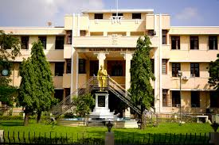
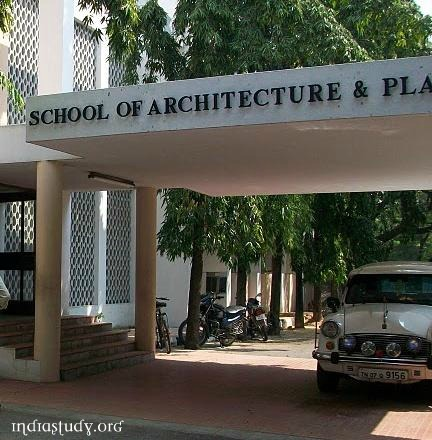

CEG Campus
The College of Engineering, Guindy (CEG) is a public engineering college in Chennai, India and is Asia's It is also the oldest technical institution to be established outside Europe.
In 1978, College of Engineering, Guindy became a constituent college and the principal seat of Anna University
ACT Campus
Alagappa College of Technology is an educational institution located in Chennai, Tamil Nadu, India that offers higher education in engineering, technology and allied sciences.
The college was established in 1944 and was integrated with Anna University in 1978 from University of Madras as a constituent part of Anna University within its Guindy Campus.

SAP Campus
School of Architecture and Planning (SAP) is one of the four constituent colleges of Anna University, Chennai, Tamil Nadu (India).
It was established as a Department of Architecture of the University of Madras
in 1957
